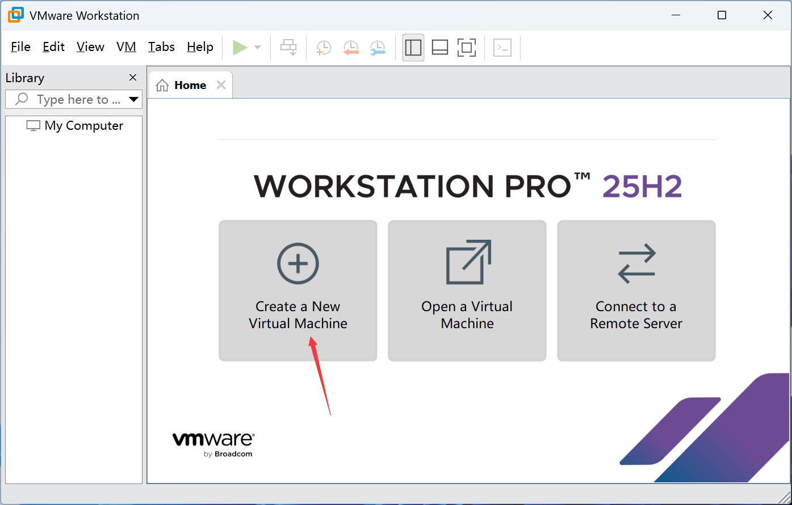
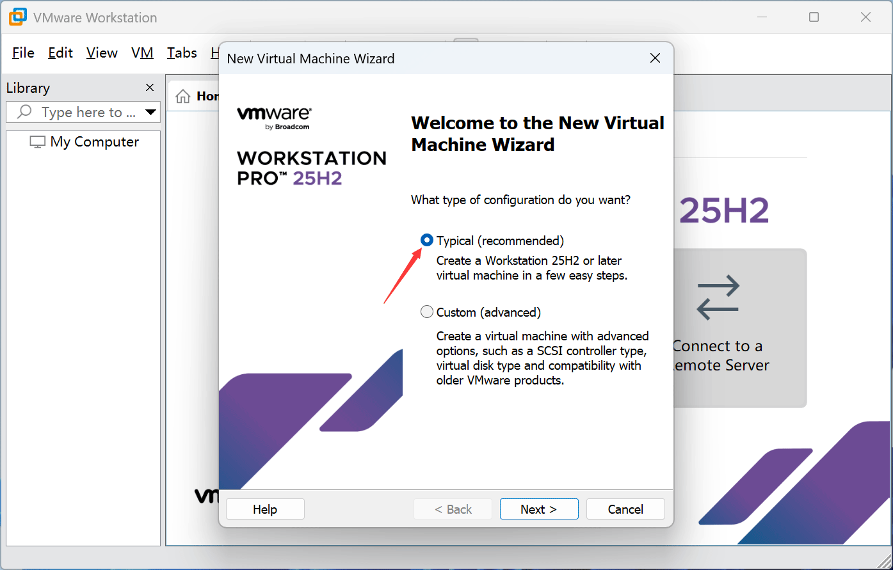
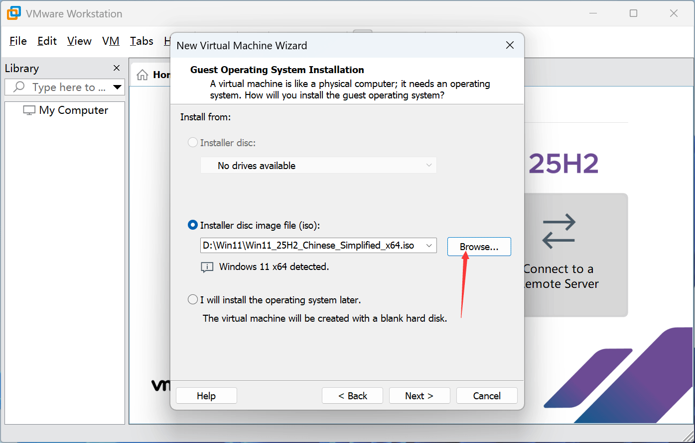
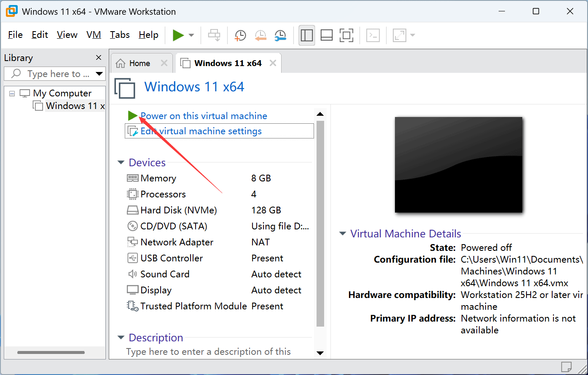
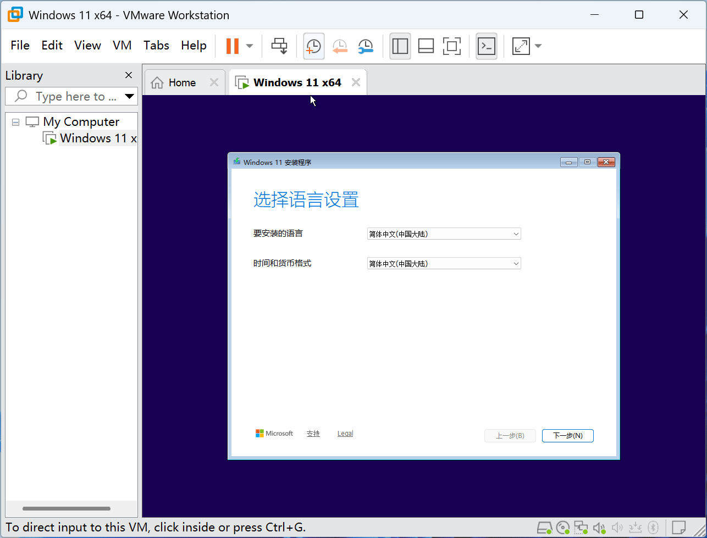
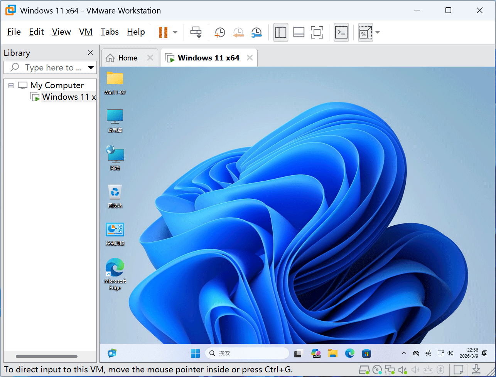

先注册一个账号，账号注册好了，点以下链接直达下载页面
直达下载页面>>，Windows找到 VMware Workstation Pro 即可，MacOS找到 VMware Fusion 即可，目前最新版本是25H2。
第一次下载需勾选左上角的同意协议，先点击“Terms and Conditions”，才能勾选，有可能还需要填一下个人信息，按照提示操作即可下载。
1、点击创建新的虚拟机。






安装步骤一共 5 步：
1️⃣ 下载 VMware
2️⃣ 下载 Windows 11 ISO
3️⃣ 创建虚拟机
4️⃣ 启动安装 Windows 11
5️⃣ 安装 VMware Tools